![[prev]](../../../icons/DocsLeftArrow.gif)
![[up]](../../../icons/DocsUpArrow.gif)
Other Tools
This document is unfinished - there is a bunch of other tools to be documented ...
Transcript - The Smalltalk Messages Window
In Smalltalk, the Transcript plays the role of a console,
where useful information is sent to. For example, the compiler
outputs progress information onto the transcript when compiling methods
from a file or from the browser.
From your programs, you can send output to the Transcript via the messages:
show:,
cr and
showCR:.
Here are a few concrete examples (click to execute):
Transcript showCR:'Hello World'.
Transcript clear.
Transcript show:'The time is '.
Transcript show:(Time now).
Transcript cr
Transcript show:'The time is '; show:(Time now); cr
Transcript
showCR:('The time is %1, today is %2'
bindWith: (Time now)
with: (Date today) )
In very old Smalltalk versions, the Transcript and Launcher (described below)
were two separate applications.
Today, these two applications have been merged into a new Launcher
(which is a bit of a stupid name, as this "new" launcher is now also almost 20 years old!).
NewLauncher - Combined Launcher and Transcript Tool
The Launcher allows startup of commonly used tools and utilities,
and contains the transcript window for messages to the user.
This application offers pulldown menus and buttons to open
useful applications, monitors and to perform most common operations.
In addition, the language, viewStyle and compiler settings can be set
via more convenient dialogs
(in previous versions, these had to be set by evaluating Smalltalk
expressions in a workspace or by editing the startup scripts).
The launcher is typically started from your "private.rc"
startup file.
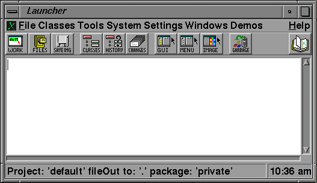
Screen image of the Launcher with a "Motif" view style.
Starting with ST/X rev 3.3, the Launcher was completely rewritten,
using the new UI-builder framework.
The items found in the pulldown menu
and the toolbar panel can now be changed using the convenient menu editor.
It is now very easy to create a user or project specific
subclass with different functions.
Also, the launcher's functionality was moved to an abstract generic launcher superclass,
which does not provide any GUI, but is purely functional.
This architecture allows for future- and custom launchers to be build easily.
Use the Launcher's settings dialog to change, save and load your personal preferences and settings.
The initial setting values are loaded from a
file named "settings.stx" in either the current directory
(where ST/X was started),
or in the ".smalltalk"-subdirectory in your home directory.
The dialog operates on the current setting values,
which are only valid during the current ST/X session.
If you forget to save the settings (via the "save" button),
any modified settings are lost when you exit Smalltalk/X,
and your next session will again come up with the previous or default settings.
Some areas are of special interest:
- the behavior of text editors (cursor at end-of-line, tabulators, etc.)
can be changed in the "Settings"-"Tools"-"Editor" area.
Notice that tabulator columns are only used for cursor positioning.
The tabs in external files are always assumed to be multiple-of-8 tabs.
- the way source code is colorized (syntax coloring)
is defined in "Settings"-"Tools"-"Editor"-"Syntax Color".
If you are used to Squeak or VisualAge styles, select the style and press the "Rest to:" button.
- the source code management (repository check-in and out) is
configured in "Settings"-"Sourcecode Management".
- compiler warnings are
configured in "Settings"-"Tools"-"Compilation"-"ByteCode".
Individual warnings, which have been disabled interactively, can also be reenabled there.
The file menu contains functions for package loading,
and to save the state of the system. Some less obvious functions are:
- Load Package
- opens a convenient package load dialog. In the past, most users did that via
scripts in their "MyWorkspace.wsp" file, but this seems inconvenient if you
are new to the system. The package load dialog gives an overview on available packages
and also shows a package's documentation.
- Save Image / Save Image As
- the usual functions to dump the whole state of the system to a snapshot file,
from which it can be restarted later.
- Save Session Changes
- this only saves changes made during the current session (the so called "Change-Set")
to a file, from which those changes may be applied later, browsed with the changes browser,
or transported to another system.
Although your main tool for programming will be the System Browser,
there are a few other less well known (and less used) tools to be found here. Of interest may be:
- Method Finder
- this does a semantic search, answering the question: "which method woudl compute me
some particular value". It is described in more detail below.
This menu contains entries to open various monitors. Of special interest are:
- Process Monitor
- an application to monitor and manipulate processes (i.e. threads) of the system.
This is especially useful to find and debug runaway processes (endless loop in a buggy program).
It is described in more detail below.
- Reload Language Resources
- this reloads the national language translation files ("xxx/resources/xx.rs"-files).
Use this to update the cached information in memory, after editing one of
the resource files. Notice that most existing (i.e. already instantiated)
widgets and menus still keep the old translations.
So some views need to be closed and reopened to see any new translations.
- Settings
- this opens the central settings dialog. There, of particular interest are the
- Language Settings
to choose a national language for the user interface,
- View Style Settings
to adapt the look of windows to your personal preferences,
- Editor Settings
to adapt the behavior of the text editor,
- Source Code Repository Settings
to setup a versioning system for your code
Among others, the window menu contains the following less known but very useful window functions:
- Migrate to Visible Area
- ever had a problem with windows on another screen, after you have unplugged a beamer or secondary monitor?
The function brings all (ST/X) windows back into the visible area.
- Shrink Window
- shrinks a window back to a small (200x200) size.
Useful, if the window is too big, so its resize handles/bounds can no longer be clicked on
(this is a special problem on the Mac, where they spared some bits and only provide a single resize handle at the lower right)
- FlyBy Window Information
- displays useful window attributes as a tooltip,
as you move the mouse pointe rover it.
- Select and Inspect Hierarchy
- click on a window and get a multipane inspector on its
view, application, model and process.
- Screen Capture without or with Delay
- both region- and fullscreen captures are possible.
Use the delayed capture, to get a chance for open popup menus to be captured.
Workspace - A Tool for Expression Evaluation
Workspaces are text editors which also
allow for Smalltalk expressions to be evaluated.
As such, they are typically used to setup a call to some function
or for little scripts which are not meant to remain permanently in the
system. You can also use them as scratchpads or notepads for ordinary text.
Notice that any view which shows code (for example: the code editor of a system browser)
also allows for immediate expression evaluation.
However, workspaces provide additional convenient features,
especially namespaces for retained variables, multiple language support,
and additional inspectors.
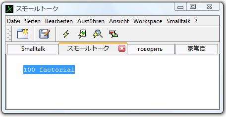
Screen image of a workspace with a "Windows XP" view style.
Beside the general text editing features, workspaces allow for Smalltalk code to
be evaluated (interpreted).
To do this,
select some text (which should represent a valid Smalltalk expression),
and use one of the following popup- or toolbar-menu functions for evaluation:
- doIt - To evaluate the expression
- printIt - To evaluate the expression and paste the result
- inspectIt - To evaluate the expression and open an inspectorView on the result
- browse - To evaluate the expression and open a browser on the results classes
In fact, if nothing is selected, the current cursor-line is taken.
Therefore, most of the time, you simply have to enter an expression in its own line
and click on one of the evaluation buttons.
Or press one of the shortkey commands as listed below.
If there was a selection, anything outside that selection is not part of the evaluation.
Thus the text for multiple scripts can be held in a single workspace,
even separated by nonevaluatable arbitrary other text. This makes workspaces perfect
as a kind of library of useful expressions.
There are also keyboard shortcuts for the above functions - typically:
- "CTRL-d" (or "ALT-d") for doIt,
- "CTRL-p" (or "ALT-p") for printIt,
- "CTRL-q" (or "ALT-i") for inspectIt and
- "CTRL-Shift-B" (or "ALT-Shift-B") for browseIt.
Depending on your keyboard settings file ("keyboard.rc"), the key assignments might be
different on your particular system.
If in doubt, look at the right-button menu or consult the Launcher's System-Settings-Keyboard dialog.
A pull down menu provides additional functions:
- TimeIt
- show the execution time it takes to evaluate the selected expression
- SpyOnIt
- show an execution trace (messageTally-spy) of the selected expression's evaluation
- Browse Implementors
- open a browser on the selected selector's implementors
- Browse Senders
- open a browser on the selected selector's senders
- Browse References
- open a browser on methods which refer to the selected global variable name
An ongoing expression evaluation can be interrupted and a debugger is opened
by pressing the Interrupt key, which is mapped to "ALT-.".
Under Windows, you can also press "Break" ("Untbr" on a German keyboard).
The Abort key, ("CTRL-Break") aborts
an ongoing expression evaluation (without going into a debugger).
Aborting means: 'raising an AbortSignal', which is cought in all views' eventLoop.
For the evaluation of workspace-expressions ("doIts"),
the Smalltalk language parser supports two additional types of semi-global variables:
"WorkspaceVariables" and "DoItVariables".
Conceptionally, these are similar to two additional pool dictionaries,
which are only visible in doIt-evaluations.
- WorkspaceVariables
These are much like global variables,
but only visible and known in the context of "doIt" evaluations
(i.e. NOT in a method's code). A value kept by such a variable is alive until the
variable is assigned a new value (typically: nil) or the variable is removed
via the "Workspace" pulldown menu.
Being both persistent and shared among all workspaces, these are very useful to pass an object reference
from one workspace or inspector to another,
or to keep objects around for later use without a need to introduce new global variable names.
Of course, they also protect you from accidentally overwriting a global by the same name.
- DoItVariables
These are like local variables,
and only visible and known in the context of one single "doIt" evaluation.
They do not add new functionality, but avoid the need to declare locals in a doIt evaluation.
The "Workspace"-menu contains an "Auto Define Variables"-item.
If checked, unknown variables are automatically declared as workspace or doIt variables.
If turned off, undefined variables trigger an error message, as usual.
Be aware that workspace variables have an unlimited lifetime, unless removed.
Therefore, some care should be taken to clear or remove variables eventually,
if it holds on to an external stream, socket, window or other limited resource.
A special variant of the workspace is the so called "Evaluation Workspace".
This adds a separate view to show an evaluation's result, a list of currently defined
workspace variables, and the last few results in a history list.
It is useful for classroom demonstrations or when exploring the system.
An evaluation workspace can be added via the workspace's pull down menu.
The set of sharedPools which are visible inside a doIt evaluation is controlled by the
"Add SharedPool" and "Remove SharedPool" menu functions,
in the "Workspace" section in the main menu.
Initially, no sharedPools are visible in a doIt evaluation.
The "System Workspace" is a workspace with a predefined page setup,
containing general information for beginners and pages with useful expressions.
It is shown when the system is started initially (i.e. without an image),
or when the "Workspace" button is pressed for the very first time in the
Launcher. Both the launcher and workspaces also offer a menu item to
reopen a system workspace.
You can add a private personalized page to the system workspace,
by creating a file named "MyWorkspace.wsp" in the ST/X startup directory.
There, you may keep commonly used expressions/doIts to start tools or applications.
If such a file exists, the WorkspaceApplication automatically adds another page to its tab-list
and presents the contents of that file there.
In version 6.2, this has been extended to support multiple such private workspaces.
To do so,
- save the contents (using the "Save As" menu function) preferrably
into the ".smalltalk" folder in your home folder.
- add a bookmark (using the "Bookmarks"->"Add Bookmark"
or "Bookmarks" -> "My Workspaces" -> "Add Bookmark Here" menu items).
Now, whenever you open a "myWorkspace", all of the bookmarked files
are shown in separate tab-pages.
You can remember a piece of code as a so called "Code Snippet".
These snippets are shared among all workspaces and code-views and are retained in a class variable
(they are not lost, when a workspace window is closed).
They are only stored inside the running Smalltalk image, i.e. there is (currently) no external file persistency.
If you forget to save a snapshot image, or you start ST/X anew, these snippets are lost.
However, you can of course add expressions to define snippets to your "private.rc" file,
which is consulted at every fresh start.
The functions for snippet handling are found in the "Edit" section in the main menu.
Snipplets can be very easily pasted into a textview via the abbreviation keystroke: type the name of the snippet
followed by CMD-SPACE (on most keyboards, the CMD-key is named "Alt" and found to the left of the space-key).
For example, to paste a template for the "ifTrue:ifFalse:" message,
type "itf "CMD-SPACE.
Standard snippets are setup in
"Workspace>>initializeDefaultAbbreviations"
as:
| Abbrev | Expands to |
| n | nil |
| t | true |
| f | false |
| in | isNil |
| nn | notNil |
| it | ifTrue: [!] |
| if | ifFalse: [!] |
| itf | ifTrue: [!] ifFalse: [] |
| int | isNil ifTrue: [!] |
| inf | isNil ifFalse: [!] |
| ints | isNil ifTrue: [^self] |
| infs | isNil ifFalse: [^self] |
| wt | whileTrue: [!] |
| wf | whileFalse: [!] |
| do | do: [:each | !] |
| dt / de / det | detect: [:each | !] |
| dtn | detect: [:each | !] ifNone: [] |
| cl / co / col | collect: [:each | !] |
| sl / se / sel | select: [:each | !] |
| rj / re / rej | reject: [:each | !] |
| inj | inject: ! into:[:pValue :each | ] |
| ex | Error handle:[ex | !] do:[] |
| np | nextPut: |
| npa | nextPutAll: |
| y | yourself. |
| sh | self halt. |
| ps | printString |
| sr | self subclassResponsibility |
| st | Smalltalk |
| ts / trs | Transcript showCR: |
| ik | includesKey: # |
| abb | Workspace snippets inspect |
| ws / wfs | Delay waitForSeconds: 1 |
| wfm | Delay waitForMilliseconds: 1000 |
| s | self |
| slef / sefl | self (typo repair) |
| ati | at:! ifAbsent: |
| ini | initialize
super initialize. |
| newi | new
^ super new initialize. |
| upd | update:something with:aParameter from:changedObject
!
^ super update:something with:aParameter from:changedObject. |
| A / a | Array |
| An / an | Array new: |
| Aw / aw | Array with: |
| Aww | Array with:! with: |
| OC / oc | OrderedCollection |
| OCn / ocn | OrderedCollection new |
| SC / sv | SortedCollection |
| SCn | SortedCollection new |
| D | Dictionary |
| Dn / dn | Dictionary new |
| ID / Id / id | IdentityDictionary |
| IDn / idn | IdentityDictionary new |
| Sn / sn | Set new |
| 0 | (0.0 @ 0.0) |
| 1 | (1.0 @ 1.0) |
| [ | [: !] |
Notice that the position of the text cursor after the snippet insertion
is controlled by the presence and position of an exclamation mark ("!") in the snippets text.
Also notice, that misspellings such as "sefl" are also included.
These help to fix typing errors immediately (as you see them while typing).
Starting with the 6.2 version, workspaces support multiple programming languages.
If the corresponding packages are loaded (libjavascript,libjava, libruby),
the evaluation language's syntax can be specified via the "workspace" menu.
The language selection changes the syntax coloring, syntax checker
and the syntax of doIt expressions.
For example, to send something to the Transcript when JavaScript is selected,
you'd have to type:
Transcript.showCR("hello")
Transcript showCR:'hello'
Multilanguage support is still being developed, so you may encounter
inconveniences. For example, the debugger might not be able to deal with
other languages as nicely as with Smalltalk code.
The edit menu contains items to perform bulk text processing functions.
These are specified by entering the code of a Smalltalk block
which is required to process/generate/filter text lines.
This is useful to insert tables or literals arrays containing
tables or regular string data, or to remove all lines
which satisfy a given predicate check.
Click here for a
tutorial on workspaces, which is found
in the "Tutorial for Beginners".
Text edit functions are described in
the "Editing Text Section"
of the "Getting started Document".
Inspector - Looking into an Object
Introduction
Inspectors allow looking into an object. They usually consist of
2 subviews, one showing the names (and possibly indices) of the
object's instance variables, the other showing the value of the selected
instance variable and allowing doIt evaluations.
There are some specialized inspectors (for example: image inspectors), which
add more subviews and/or show the object additionally in a more user friendly
form. The new Inspector provides a list of tabs, to select one from the various presentations.
When inspecting collections where the logical contents is different from the internal representation
(eg. instances of Set, Dictionary, OrderedCollection and others),
the tab named "Basic" shows the actual internal representation,
whereas the other tab shows the object's contents "as seen by the programmer".
Opening an Inspector
Inspectors can be opened:
- by executing:
anObject inspect
anObject basicInspect
inspect
and basicInspect).
- by executing:
Inspector openOn:anObject
- by using the "inspectIt"-menu function in any codeview.
All code views allow inspecting the result of an expression evaluation,
via the "inspectIt" menu-entry
(there is also a keyboard abbreviation, usually CTRL-q).
- by double-clicking on a name entry in an inspector
Many other tools can open inspectors.
For example, the system browser's class list has an
"Inspect Instances"-menu function, the process monitor
has an "Inspect Process" function etc.
Also, inspectors are often embedded: for example, the debugger contains
two inspectors at the bottom (for the receiver object and the current stack frame),
or the window-hierarchy tool, which contains a number of inspectors in its
notbook tabs.
Inspecting Large Collections
If the inspected object contains a large number of indexed instance variables,
only some of them are shown in the instance variable list initially
(to save time and memory during startup of the inspector).
In this case, the list's popup menu will contain an entry named "Show More" to
increase (double) the number of shown instance variables.
A truncated list shows '...' as the last entry in the name list.
You can also click on this entry to see more items.
Displaying Large Objects (i.e. Long DisplayStrings)
If an inspected object (or a slot in it, when selected)
generates a long displayString (shown on the right side),
the string is cutoff after a configurable limit, and '...' is appended.
This is to prevent long delays when huge objects are shown.
The limit can be changed via the Inspector's view-menu.
The default is 100000 characters.
Inspecting Dictionaries
The variable list shows the
dictionary's keys instead of the raw (i.e. real) instance variables.
If this is not what you are interested in, select the "Basic" tab,
or use the "basicInspect" method,
which opens an inspector without this behavior.
Updating after a Change
To avoid overhead, inspectors do not update their name list and value indicators automatically,
when the inspected object changes its contents. As a matter of fact,
many objects do not send out change notifications when changed, so
the inspector had to check and compare periodically in order to
detect such changes (ie. poll for changes).
Such periodical checks may involve a lot of
overhead (for example, if the collection is large) and also may lead to
side effects (or example, if the inspected object does some computation
when asked for its slot values). Therefore, periodical checks are disabled
by default.
However, periodical checks can be enabled explicitly via the "Start Monitoring" menu item.
To force a single update (for example, after a collection has changed its
size) click on the self entry in the list.
This will both update the list
AND show the object's new printed representation in the value view.
Without updating, you may run into an index error (and therefore: a debugger),
if you select an entry in a collection which is no longer valid.
For example, try:
#(1 2 3) asOrderedCollection inspect
self grow:2
Since the index 3 is no longer a legal one, you will run into a
debugger due to an index error.
To fix this, `continue' or `abort'
in the debugger, and click on the self
entry to force an update in the inspector.
Inspecting Instances
Double clicking on a name/index in the instance variable list opens another
inspector on this instance variables value (the new inspector remembers the
old object in its history and shows the new object, without an extra window).
Examples (click to execute):
#('one' #two 3.0 4) inspect
#('one' #two 3.0 4) asOrderedCollection inspect
#('one' #two 3.0 4) asOrderedCollection basicInspect
( #('one' #two 3.0 4) asOrderedCollection removeFirst; yourself ) inspect
( #('one' #two 3.0 4) asOrderedCollection removeFirst; yourself ) basicInspect
(Image fromFile:'../../goodies/bitmaps/xpmBitmaps/smileys/smiley_angry.xpm') inspect
(Image fromFile:'../../goodies/bitmaps/xpmBitmaps/smileys/smiley_angry.xpm') basicInspect
(Color yellow) inspect
(Color yellow) basicInspect
(Array new:400) inspect
Pseudo Entries in the Fieldlist
The inspected object's field list (on the left) contains a number
of pseudo entries, which depend on the type of object.
Pseudo entries start with a "-" character and are shown in italics.
They are not really instance slots of the object,
but instead generated by the inspector itself
and provide additional useful information about the object.
For example, for collections, a pseudo entry named '-size',
which shows the collection's actual size if the actual size
is different from the logical size.
Inspect vs. basicInspect
Sending basicInspect to an object will always open a general inspector,
which shows instance variables as they are physically present in the inspected object.
In contrast, inspect is redefined in some classes to open an inspector showing
the logical contents.
For example, some collections, use an extra collection to hold the contents,
so the logical view (the protocol as seen by the programmer) looks different from
its internal representation.
Try inspecting an (nonempty) instance of Dictionary to see the difference:
|d|
d := Dictionary new.
d at:#foo put:1.
d at:#bar put:2.
d inspect.
d basicInspect.
The New Inspector
In addition to the multitab presentation (inspect, basic, visual and class),
the new inspector also keeps a history of visited objects.
When double clicking on an entry in the name list, the new value is shown in
the same inspector (instead of opening a new one), and the previous object is
added to the history. Use the navigation buttons to get back to any previously visited
object.
The new inspector is pluggable: individual classes may provide
additional tabs by redefining a tab specification.
Take a look at the Color, Image or ByteArray classes for concrete examples.
Process Monitor - Show & Manipulate Smalltalk Processes
This tool displays a list of active Smalltalk processes (i.e. Smalltalk threads - not OS processes) and their current state.
Its popup menu provides common operations to be applied to a process or a group of processes.
The process monitor is a very useful tool to find (and terminate or debug) leftover
background processes - especially during program development & debugging.
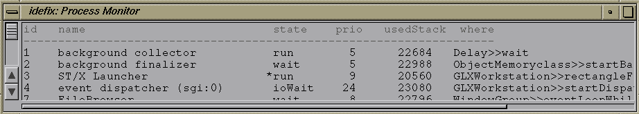
Very old screen image of the Process Monitor (it does look much better these days).
The fields are:
- Id
- the processes ID; this number is assigned by the runtime system when
the process is created. Each process has a unique ID.
- Group
- the process group ID; this is empty for process group leaders and
the ID of the group leader (the creator) for other processes.
The process group allows for easy termination of some process with all of
its subprocesses.
- Name
- the processes name; this is provided for your convenience and has
no semantic meaning.
If no explicit name was ever given to the process, it's the name and ID
of its creator with " sub" appended.
- Instr
- the processes coverage monitoring state. See below.
- State
- the processes execution state. See definitions below.
- Prio
- the processes execution priority.
The priority is an integer in the range 1..31. If two or more
processes are runnable, the system selects the highest priority process
for execution.
If the process has a dynamic priority range, the range is shown behind
its current priority (which may change).
- Where
- the method in which the process is currently executing or
in which it was suspended (went sleeping).
The state of a process is one of the folowing:
- run - the process is runnable (but CPU is not executing it)
- active - the CPU executes this process right now
- wait - the process is waiting on some semaphore
- ioWait - the process is waiting on an IO-semaphore
- wrapWait - the process is waiting in a blocking API call (win32 only)
- eventWait - the process is waiting on an eventQueue-semaphore
- timeWait - the process is waiting on a timer-semaphore
- suspended - the process is suspended, but not waiting on a semaphore
- stopped - manually stopped; like suspended, but will not respond to interrupts
- halted - stopped by CTRL-C (win32 only)
- light - the process has not yet started (it has no stack allocated yet)
- dead - the process has died (these are normally not shown)
The process which ran at the time of the update is marked with
an (*) character.
If none is marked, the scheduler was active (or waiting for an event).
Processes which ran during the last timeSlicing period (usuall 1/20th second) are marked
with a (+) character.
The list is updated every few seconds, so be prepared for some delayed
visibility of new processes.
A popup menu (and tool buttons in the new version)
allows for useful operations to be performed on a selected process:
- Inspect - opens an inspector on the selected process.
- Debug - opens a debugger on the selected process.
- Resume - resume execution of a suspended process
- Suspend - suspend execution of the process
notice, that the process may be resumed by the system due to a timer
or I/O event.
- Stop - stop execution of the process
timer or I/O events will not resume a stopped process
- Abort - send an AbortSignal to the process
all processes are supposed to return to a save place (typically the
main event handling loop) when an abortSignal arrives. This can be used to
force a process "out of" a long term (or endless) computation.
- Terminate - terminate the process
sends a TerminateSignal to the process; the process has a chance to
perform any cleanup (unwind) actions and is then removed from the system.
- Terminate group - terminate the process and all of its group members
use this to terminate a process which has created background processes.
(for example, a workspace in which subprocesses were forked)
- Hard Terminate - terminate the process without cleanup
immediately terminates the process, without giving it a chance
to perform any cleanup (unwind) actions.
Only use this, if a terminating process blocks in its unwind actions
(due to a bug or deadlock).
As there are no unwind actions performed, the process has no chance for any
proper cleanup and leftover resources, open streams or locked semaphores
are likely to be encountered afterwards. Be aware of this, and only use this
if a regular abort or terminate operation fails.
- Raise prio - raise the processes priority by one
- Lower priority - lower its priority by one
Additional information (among others) is:
- UsedStack - the size of the stack being in use by the process
- TotalStack - the size of the stack as allocated for the process
This is adjusted dynamically by the runtime system.
Other items are only of interest for ST/X runtime system debugging.
Probably the most useful item found is the "debug" function,
which opens an inspector-like debugger on the selected process.
This may be useful if some process is waiting on
a semaphore and you want to see exactly where the wait is and how it reached
it. With the debugger's monitor option, you can even watch & see what
that process is doing!
Note:
Since at the time of the view update,
the active process is always
the process monitor itself, the distinction between run and active
states is useless here: you will always see that process as being active
in the monitor's display.
The above described process monitor component is now embedded inside an
improved application, which provides many additional menu und toolbar functions.
Among others, most useful are:
- Raise/Lower Application's Window
This function is enabled if a GUI-process is selected. It will raise (deiconify) the
processes main window.
- Pick a View
Lets you select a window on the screen (by clicking on it) to
select the corresponding UI process.
- Instrumentation
Enable/disable the coverage monitoring of the selected process.
Be reminded that coverage analysis can be done either globally (i.e. coverage is recorded
regardless of which process executes the code) or process-specific (coverage is only
recorded when a particular process executes the code).
When recording code coverage, it is usually desired that code is only recorded,
when it is executed by the test suite, not by other parts of the system.
This is especially a problem, when code coverage of UI components or basic class libraries
is to recorded (think of the code of a scrollbar to be analyzed).
That code is also executed by the base system (IDE) itself (i.e. by other processes).
Therefore, coverage monitoring should usually be enabled for a particular process
only, not globally.
Of course, coverage monitoring only works, if the corresponding classes have been
instrumented before (see the SystemBrowser's documentation on how this is done).
The most common operations are also found in the toolbar menu.
This tool displays a list of Smalltalk semaphores, their internal count
and the list of processes on its waiting list.
This tool is useful to debug deadlock or endless-wait situations in
multithread applications.
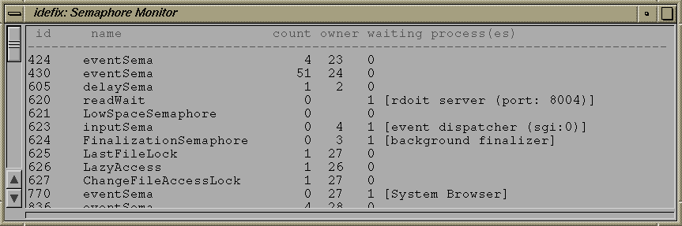
The columns shown are:
- Id
- an internal id (actually, the semaphore's hashKey)
- Name
- the semaphore's userFriendly name (if it has one)
- Count
- the semaphore's count (i.e. the number of waits that go through
without blocking)
- Owner
- the processId of the process which was dropping the count to
zero the last time (i.e. which got the semaphore). This id is not cleared
when the process releases the semaphore - it stays set, even if the semaphore
is actually free. I.e. it holds the ID of the current or the last owner.
- Waiting processes
- the number and names of process(es) waiting for the semaphore
to be signalled.
The popup menu offers useful functions on the semaphore which is selected in
the list; especially "Signal", to unlock a semaphore.
Memory Monitor - Displays overall Memory Usage
This utility displays the amount of object memory used by the system,
and displays various other statistic values.
Its popup menu offers functions to manually perform
either blocking- or nonBlocking background garbage collects.
Some of those functions are provided as debugging & measuring tools,
and not required by the typical user.
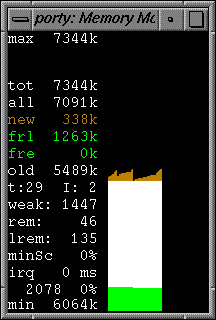
The numbers shown are (top to bottom):
- lim - the maximum allowable oldSpace size.
This is a configurable limit (set in the startup rc-file),
which prevents a runaway program from allocating too much memory
and leading to thrashing the systems virtual memory.
- max - the maximum overall amount ever allocated (since start of the monitor),
This value is useful to estimate how much peak memory is
needed during a session. The value can be reset via the popup menu (reset measured value).
- tot - the current total amount of used memory (new + old + free)
- all - the current used amount of memory (new + old)
- new - the amount of new space used
(this is the memory area in which objects are initially created)
- frl - the amount of memory in free lists (fragmented free space)
- fre - the unused portion of oldSpace (compact free space)
- old - the amount of oldSpace used
(this is the memory area into which long living objects moved)
- mal - malloc'd memory in use (not inside object memory)
- mto - malloc'd memory total (i.e. free+in use; not inside object memory)
- code - jitted code (not inside object memory)
- min - the minimum overall amount (since start of the monitor)
the other numbers are less of interest to normal users, but give some info to VM developers:
- t - the current dynamic tenureAge
- I - the internal state (phase) of the incremental garbage collector (2 = idle)
- weak - the number of weak objects
- rem - the number of objects in the remembered list (old->new crossrefs)
- lrem - the number of contexts in the lifo list (obj->stack crossrefs)
- minSc - scavenger's worst case survivor percentage (since monitor start or last reset)
- number of scavenges (minor collections) since system started
- % - the fill-grade of newSpace after the last scavenge
The graphic displays a history of the used amount. Newspace size
is shown in orange (light grey in b&w displays),
freelistspace in green (dark grey)
and oldspace in white.
The history is updated twice a second.
Use the key-commands 'f' (for faster) and 's' (for slower) to change
the update interval.
Press 'r' (for reset) to rescale the display.
The typical picture shown is some saw-tooth figure;
memory use is usually growing until a newspace collection (scavenge) reduces the amount.
Don't be surprised by some activity even in an idle system.
This is caused by the scheduler, time slicer and (mostly) the memory monitor itself.
The memoryMonitor also provides a popup menu for common garbage collect
operations:
- collect garbage - perform a mark&sweep oldSpace collect.
the system will be blocked while doing this.
- collect garbage & symbols - like above, but reclaim unused symbols as well.
- collect garbage & compress - perform a compressing oldSpace collect.
the system will be blocked while doing this.
- background collect - perform a non blocking mark&sweep collect.
the system will continue to react, since this collect is performed
incrementally in the background.
This is executed at low priority; if other user processes (at normal priority)
are currently running, this garbage collect may not make any progress.
- reset statistic values - clears minSc & max amount
The "others"-submenu provides less frequently needed operations
to be invoked:
- scavenge - perform a newSpace collect
- tenure - clean the newSpace; surviving objects
are immediately tenured into the oldSpace
- hi prio incremental collect - perform a non blocking mark&sweep collect.
the system will continue to react, since this collect is performed
incrementally in the background.
In contrast to the above ("background collect"),
the incremental garbage collect is performed at high prioriy and guaranteed
to make some progress.
- cleanup memory - sends all classes a
#lowSpaceCleanup
message, to have them free any cached or buffered data.
If your classes keep any recoverable objects in classVariables (caching),
these should implement this message and release these objects there.
- flush method history - flush method history
The method history (if enabled in the launcher's "Source & Debugger"
settings dialog) keeps previous versions of changed methods.
Over time, this may take up some memory and can be flushed
periodically if ST/X runs on a machine with a small memory
footprint (e.g. a Raspberry-PI or similar).
- unload autoloaded classes - unloads all classes which were autoloaded
and changes them to become autoloaded again.
Use this, to remove examples, demos and games which are no longer needed.
- compress sources
this writes out all incore method source strings to a single file called
"st.src" and replaces the in-memory strings by references
into this file. This reduces memory requirements after you have changed
(or filedIn) lots of code.
Be very careful in keeping this file
intact, unchanged and in sync with images.
Since your methods sources are no longer directly
available as string objects after doing this,
your methods source would be lost, if this file gets corrupted.
(However, you still have your changes file around for emergency)
Memory usage - Displays Statistics on Memory Usage by Class
This utility
displays the amount of memory allocated by individual classes.
The display can be sorted by different criteria - use its popup menu to
change this.
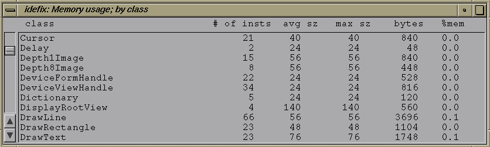
Since scanning the memory is a time consuming operation,
there is no automatic update of the list;
use the menus update function to manually update the display.
A memoryUsageView is useful to find memory leaks.
In Smalltalk, these are not caused by not freeing memory, but instead
by keeping references to objects in globals or class variables.
(so, if you find those leaks, don't blame it on the garbage collector;
the collector cannot free the memory as long as any reachable
reference to an object exists.)
The menu includes two very useful functions, which help in finding
those references:
- owners
which opens an
inspector on all objects owning references to instances of the
selected class
(showing the names/indices of the instance variables,
which hold a reference).
- ref chains
which displays chains of references from a global to instances of the
selected class.
Thus, if you have trouble finding out why some object is not garbage collected,
open a memory usage view, select the class and use the ref chains
menu function to find out how those instances are still references.
Notice, that the owners function will not be much of a help,
if the object in question is kept from being freed by a long
chain of references (for example, if it's in a long linked list which is
anchored in a global variable).
Also notice, that the ref chains function may be very time consuming.
This tool lists the classes/methods/functions as contained in the loaded
dlls (shared libraries).
This is useful to find out version information in case of an error.
The tool's menu also allows for a dll or the complete package to be unloaded.
Its popup menu also provides a convenient way to get a module's version information into the clipBoard.
Event Monitor - Displays Events sent to a View
This tool is useful when keyboard mappings are changed or tested.
It outputs the
incoming event-messages on the standard output (xterm-window / console)
or alternatively to the Transcript.
(similar to the 'xev' XWindow utility).
To try it, open an EventMonitor, place the mouse pointer into it, and press
some key(s) on the keyboard. Watch the trace output.
An EventMonitor can also be started via the Launcher's "System-EventMonitor" menu item.
Notice: this is a very old tool, and has been obsoleted by the "View Tree Inspector", described below.
This tool displays a view's widget hierarchy graphically (Smalltalk views only).
When started via the launcher, a crosshair cursor is shown, and
you should click on some (Smalltalk-) view on the screen.
That view's widget hierarchy will then be displayed;
visible components are displayed in red color,
invisible (i.e. hidden or unmapped views) are drawn black.
The popup menu shows various details about a selected widget
and allows further inspection.
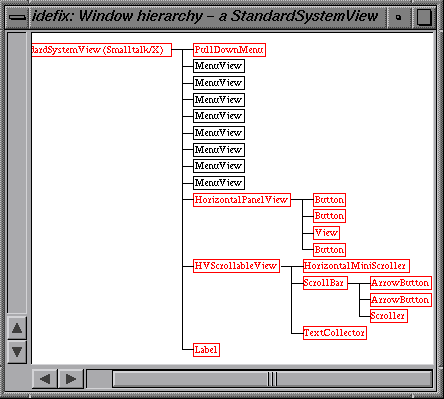
The (now obsolete) simple view tree appliciation.
A graphical viewTree can be opened via the launcher's "Tools-Views"
pullDown menu; either on a single view (which is to be selected with
the mouse), or on all views.
This tool is opened via the Launcher's "Window"-menu.
This tool allows for the hierarchy of a (Smalltalk-) window's widgets
to be inspected.
After startup, a crosshair cursor is shown,
and you should pick a window by clicking on some (Smalltalk-) view on the screen.
That view's widget hierarchy will then be displayed.
The menus provide access to various
useful information to a programmer.
Widgets can be selected either via the widget tree
or by changing to "pick mode" and clicking right on the widget of interest in
the inspected application's window.
"Pick mode" is toggled via the toolbar's lock-icon.
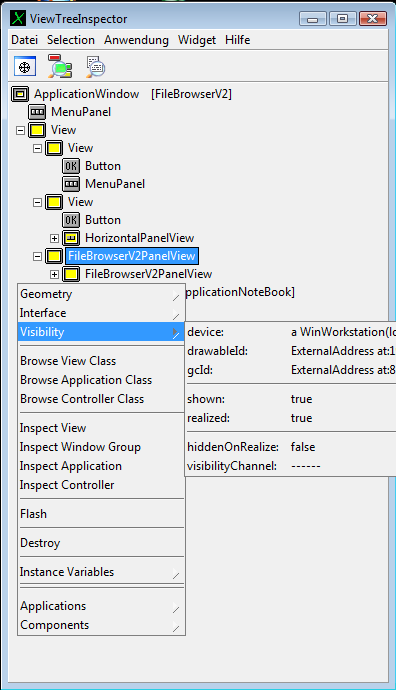
The improved view tree appliciation.
This tool is opened via the Launcher's "Window"-menu.
XML Inspector - Show the Structure of an XML Document
This tool displays the structure of an XML document.
It is especially useful when an element's XPath is needed,
as this is automatically shown whenever an element is selected.
Currently, the XML Inspector only works with VW-Dom nodes.
It is being changed to support YAXO nodes too.
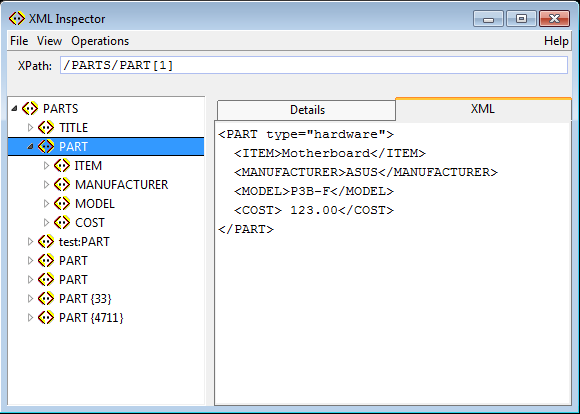
This tool can be opened programmatically on a parsed XML dom tree,
or via the file browser's "File"-"Tools"-menu,
to inspect the contents of an XML file.
Method Finder - Find a Selector by Argument & Result
The method finder answers questions of the form: "given this input, and that desired output, what is the name of the
method to invoke".
Concrete examples could be questions like:
"what is the name of a function to convert a string from lower- to uppercase?"
or "what is the name of a function to compute the sum of values in a collection?".
This tool can be started via the Laucher's
"Classes-Special->MethodFinder" menu function,
or by clicking on a method name in the browser's explainer info field
(shown at the bottom, when the cursor is in a message selector).
Use an example to find a method in the system.
Type receiver, args, and answer in the top panes,
like 4 5 1.
Then press the search button.
The lower left pane will show all messages which
when send to the receiver 4 with an argument of 5
will answer the value 1.
Try it again with a receiver of
'hello', and argument of 3 and an
answer of 'llo'.
Finally, to answer the above example-questions,
try it again with a receiver of 'hello',
no argument
and an answer of 'HELLO'
(to find the message: "asUppercase")
or with a receiver of #(1 2 3 4),
no argument
and an answer of 10 (to find the message: "sum").
You can write expressions in the fields to create a non-literal
object such as a Dictionary (rather than using strings and numbers).
But be aware, that these expressions are evaluated and may
have side effects.
Usually, it is a good idea to try an expression
like "basicNew" first, to avoid side effects.
In addition, a limited browser is included: selecting an item in the lower left pane
shows the implementors in the upper right pane; selecting any of the implementors will
display the method's code in the lower right pane (which is readOnly; i.e. no accept
is possible).
The methodFinder-GUI is actually using the MethodFinder-class to do the actual work.
This one provides even more search functionality.
For example, if you evaluate ("printIt") the following in a workspace
MethodFinder methodFor: #(
(4 3) 7
(0 5) 5
(5 5) 10)
it will discover (data1 + data2) - i.e. a message selector which satisfies all of the three
constraints.
In addition to the above described "find my example",
the methodfinder window also shows an interactive pattern search.
So if you have a rough idea, of how a message might be named,
enter "*foo*" into the search field. As you type, more or less
implementors are shown in the result list below the search pattern field.
MethodFinder GUI
The MethodFinderWindows provides an easy to use GUI interface to the above described functionality.
To use, enter the receiver value, the number of arguments, optionally any argument values, and the expected
result (answer) into the top-left panes.
Press Search to find the set of methods which conform to this specification.
Some fancy examples of its usefulness are:
| Receiver | Arg1 | Arg2 | Result | Finds this |
'knock knock' | $k | | 'noc noc' | 'knock knock' copyWithout: $k |
'30 apr 1999' asDate | | | 'friday' | '30 apr 1999' asDate weekday |
Float pi / 2 | | | 1 | 1.570796 sin |
This tools was originally written by Ted Kaehler, Scott Wallace and Dan Ingalls for Squeak.
ToDo List - Tool to Remember Things to be Fixed
This tool monitors error and warning-messages from the compiler and displays them in a list.
Whenever a change is made to a class or a method, the TODO-list checks if any of those remembered
errors is now fixed. If that is the case, the entry is removed from the list.
The list is initially empty; however, every compilation error which is confirmed with
a "Continue" and many warnings will lead to an entry being added.
As an example, try to remove an instance variable which is still accessed in a method
from a class.
The use of this tool is especially helpful while programming new code,
where some of the sent messages are not yet implemented.
Of course, you can also run a static code check (lint) on your code,
but the todo list is more "realtime", and you can continue doing
other work, without forgetting things that still need attention.
A double click on an entry in the list opens a systembrowser and navigates it to
the code in question.
Notice: you can quickly check a class (or group of classes) by selecting them in a browser
and then performing the "Recompile-All-Methods" menu item in the class lists "Debug"
submenu, while a ToDo-List tool is open.
Of course, the amount of warnings and hints depends on your current
compilation settings (in the Launcher's setttings dialog).
You may have to enable some warnings to get any output.
This tool shows a list of methods which contain either a static (coded) breakpoint
or which have a dynamic trap attached,
and makes it very easy to quickly locate and enable or disable breakpoints.
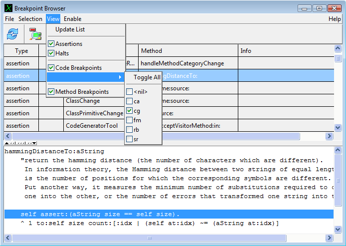
The breakpoint browser (shown in the "Windows XP" view style).
Usage
The Breakpoint-Browser's major use is in finding methods which contain breakpoints and to
enable or disable them.
When started, the list displays all locations of a breakpoint.
For that, the whole system is scanned for breakpoints, which takes a few seconds initially;
after that, it watches your changes and updates its list incrementally in real time,
without any further noticable delay. Therefore, it is better to keep this view open (or iconified)
during a development session, instead of closing and reopening it.
By checking corresponding
items in the "View"-menu, this list is filtered by type of breakpoint and by argument.
Breakpoints can be enabled or disabled both by type and parameter.
By default, halts and assertions are enabled, whereas breakpoints are disabled.
To open a browser on a selected method, either double-click on the item in the list,
or press the "Browse"-button in the toolBar menu.
Small editing changes like removing breakpoint code or adding information prints
can also be done directly in the code view: simply type it and accept as usual.
Dynamic breakpoints are set and cleared from within the system browser's debugging menu
(or via the traffic light buttons, or via line-breakpoints in the edit view).
Static breakpoints are coded as messages sends
using one of the following selectors:
#halt
#halt:
#breakPoint:
#breakPoint:info:
#assert:
#assert:message:
Breakpoints
Of special interest are the #breakPoint: methods;
these behave much like ordinary #halt messages, but differ in two aspects:
- by default,
#breakPoint:-messages are ignored.
This means, that you can leave them in production code.
- they can be enabled/disabled easily;
individual breakpoint groups can be differentiated by their (symbolic) argument.
A typical use of these breakpoints is with the initials of a programmer as (symbolic) argument,
to allow individual programmers within a team to control the execution of
his own breakpoints. To do so, add a piece of code such as:
self breakPoint:#ab
self breakPoint:#ab info:'bla bla'
#ab stands for an arbitrary key (such as your initials).
By default, these breakpoint-halts are ignored, so that the execution is not interrupted by a debugger.
However, they can be enabled or disabled at any time by evaluating:
self enableBreakPoint:#ab
self disableBreakPoint:#ab
Halts
Halts can also be temporarily ignored by the debugger: the debugger's breakpoint menu
includes entries to disable a halt either for some time, or for a number of occurrences or forever.
Such temporarily disabled halts can be found quickly by checking one of the halt-filters
in the "View"-"Halt"menu, i.e. by setting the "show only ignored halts" filter.
The breakpoint-list's popup menu also includes a function to re-enable such a disabled halt.
TracePoints
Similar to breakpoints,
tracepoints can also be tagged with an id,
and individual traces be enabled/disabled by those group tags.
For a conditional tracepoint,
add a piece of code such as:
self tracePoint:#ab
self tracePoint:#ab message:'bla bla'
#ab stands for an arbitrary key (such as your initials).
By default, these tracepoints are ignored, so that no output is generated.
However, they can be enabled or disabled via the above mentioned
enable/disable messages, or via the Breakpoint-Browser.
Debug Code
Similar to break- and tracepoints,
this consists of a piece of code which is to be conditionally
executed:
self debuggingCodeFor:#ab is:[
...
conditionally executed
...
].
#ab stands for an arbitrary tag key.
Startup
The breakpoint browser tool is opened via the Launcher's "System"-menu,
Notice our convention at Exept Software AG:
in contrast to halts, coded breakpoints can be left in published
code as long as further development and enhancements to the code are ongoing or likely,
and individual team members are still interested in aspects of the execution.
Then, this team member adds a breakpoint with his/her initials as argument to the code,
and individually enables all of his/her breakpoints using this tool for testing.
As breakpoints are ignored by default, this does not affect other team members.
A full description of the debugging facilities is found
in "Advanced Debugging Support in ST/X".
SUnit - Unit testing framework and TestRunner GUI
This framework (-> Kent Beck, Ward Cunningham and others) allows for convenient
component testing.
This tool was ported to ST/X by Samuel Shuster and Travis Griggs - thanks to you and
all other Camp Smalltalk guys !
For automatic testing, testcases (subclasses of TestCase) should define a bunch of methods
named 'testXXX', which test various aspects of your code.
For checks, the inherited messages #assert:, #should, #shouldNot etc. should be used.
See the provided ExampleSetTest for more info on how to use this.
The TestRunner GUI interface automatically searches for all test cases as present in the system,
and offers execution via a pull-down list:
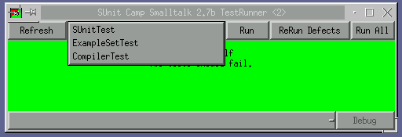
After selection of the test, run its test-methods by pressing the "Run"-Button.
Failures are collected and provided in the lower pull-down list for debugging.
Although simple, this is a very useful tool and we highly recommend its use -
it will make your life MUCH easier.
Please read some good book(s) on eXtreme programming or
Kent Becks original "Smalltalk Testing"" paper
for more information.
Using the TestRunner
The TestRunner is started either by double-clicking on a TestCase class in the browser,
by evaluating:
TestRunner open.
- Refresh - Button
Press this button to update the list of offered testCases (in the TestCase-PullDown list)
(Use this after new testCases have been added, or when testCases have been filedIn/autoloaded).
- TestCase Selection - PullDown list
Select a particular TestCase to run.
- Run - Button
Executes all test* methods from the selected testCase; rememberes the results and changes the
information view's background color to red, if any test failed or green, if all tests succeeded.
- ReRun Defects - Button
Re-Executes only the failed testCases from the previous run.
- RunAll - Button
Executes all testCases present in the system
- Defects - PullDown List
Displays failed testCases and allows for selective reRun with a debugger opening up at
point of failure.
- Browse - Button
Opens a SystemBrowser on the selected TestCase.
- Debug - Button
ReRun the selected failed testCase with a debugger opening up at point of failure (if it fails).
The main information window displays progress information (while executing testCases) and the final
result. Its color is changed to yellow while executing, and back to
green (if all ok) or red if any testCase failed.
Notice that some of the test runner's functionality has also been built into the
New Systembrowser.
This tool can also be opened via the Launcher's "Tools"-menu.
The new test runner2 shows an enhanced interface which adds execution history and popup menus for browsing.
In addition, it has an "Execute with Coverage Measurement" button,
which is enabled if the selected testcase specifies the set of classes which are covered
by this test via a coveredClassNames method.
When pressed, these covered classes are instrumented before the test run,
and a browser which displays the code's execution status is opened.
As the coverage display is updated during the test run,
you can easily see which code is executed during the testrun.
Before each coverage-run, the previous collected coverage data as cleared,
so the coverage display only reflects the outcome of a single run.
Pressing one of the other run buttons executes while updating the previous
coverage info without clearing it first.
You can specify which of the two test runners is to be used
by the system via the Launcher's "Settings"-"Tools" dialog
(although the new testRunner2 is the better choice).
This tool is opened by the system browser's "Compare..." menu function
found in the project, class and method list popup menus.
It shows a side-by-side comparison for two versions of a class, two classes or
two versions of a set of classes (for example, a package).
Typically it is used to compare the current (in-memory) version of a class or package
against another version in the source code repository. However, it is also possible to compare
two repository versions against each other.
The scrollbar to the right of the text view in the lower area
marks different areas by coloring.
So you can quickly navigate between changes.
When comparing packages, a huge number of changes might come up.
When analyzing the effect of those (i.e. when searching for changes which might
have lead to a bug), it may be hard to find the relevant changes among all documentaion, comment
or formating changes. Also you may have an intuition that some class-changes might be irrelevant for
a particular investigation.
To support this kind of work, the version diff browser offers a number of filters,
which reduce the amount of data being shown.
Filters to hide comment-only changes, documentation and version methods, category changes
are foundin the tool's "View"-menu.
Filters to hide classes, classes matching a pattern, selectors and selectors matching a pattern
are found in the context menus of the lists and the "Filter"-menu.
In addition, methods which only differ in formatting or comment strings
are listed in gray in the selection lists.
It is possible to remember filter-setups (during the current session in a class variable),
or to export/import filter setups as XML (for exchange, if searching in a team).
Packager - A Standalone-Executable Builder and Packager
This assistant-application allows for standalone applications and binary class libraries
to be built very easily.
It generates all required classes, files, starts the compilation process,
and creates a self-installing executable for deployment with a few mouse clicks.
A simple demo application like the (in)famous "Hello World" can be generated in a few minutes.
Please read the "Introductionary Text"
for tutorial info about it.
Prerequisites
Windows Users:
For 32bit ST/X versions, please install either the
"Borland Free Commandline Compiler Tools" (bcc32)
or the "Microsoft Visual-C++" package
(also free, known as "Visual-C Express").
For the 64bit version, the MINGW64 compiler package is needed.
In addition, the free "NullSoft NSIS-Installer Package" is required to create self-installing
executables for Windows. If you plan to use the Microsoft compiler, you also
need a Windows SDK to be loaded and installed.
Due to limitations and bugs in the Visual-C++ compiler (limit on the size of string-constants),
some Smalltalk code is not compilable with MSVC compilers before VC10.
In particular, this affected classes containing image-resource methods for big images.
Those problems seem to have vanished with VC10, but may reappear when bigger image resources are to be compiled.
Therefore, although Visual-C is supported by the build system,
(and we are compiling and evaluating unit tests with a VC10-built ST/X),
we still recommend using the Borland compiler suite for some unspecified migration time.
Please install bcc32 at its standard location ("C:\Borland") as some makefiles/rule files might contain
hard-coded pathes (yes, we are ashamed about this).
The mingw compiler should be installed in C:\mingw or c:\mingw64.
Unix Users:
You should already have the gcc compiler suite (including all required header files) installed and ready to use.
For a lack of time on our side, there is currently no self-installer support for Unix.
The packager will generate a zipped tar file, which must be deployed and unpacked for use.
This may change in the near future, to create a somewhat more appropriate package
(the major hurdle is, that there exist multiple incompatible package managers
in the Linux world, the only one which works on all is the somewhat outdated
"autopackage" manager, which is not preinstalled on all Linux distributions).
Mac OSX Users:
You need either the gcc compiler suite
or the newer clang compiler (including all required header files)
to be installed and ready to use. If you install XCode from the app-store,
you should have everything you need (although ST/X only needs the command-line
tools). For a quick verification, type "gcc --version" on the command line; if you get a reasonable
response, you should be ready to go.
Hint: on the authors machine, the answer is "Apple LLVM version 6.0....".
The packager will generate a mountable ".dmg" package file for GUI apps,
which contains the binary app and all required components (shared libraries) for deployment.
Actually, the app can be started right out of the "dmg" or dragged to the "Applications"
folder or to wherever the end-user wants it.
Currently, Mac build support is still being developed and unfinished;
for example, there is currently no support to specify fancy icons or assistent
supported installation of packages.
Packages, Projects, PackageIDs and ProjectDefinitions
Smalltalk/X basically uses two objects for packaging and package identification:
- PackageIDs (also called ProjectID's occasionally)
- ProjectDefinitions
Older ST/X versions used instances of a Project class
- this is now obsolete and might be
removed eventually from the system.
As some customers have built their own packaging
scheme around it, it will be kept for some time but
unmaintained for backward compatibility.
PackageIDs
These are simple symbols and are attached to classes and methods. If a method has a packageID
different from its class, it is called an extension method.
There is one special packageID used for "as-yet-unassigned" code ("__NoPackage__").
This is attached to new classes and methods until they are checked into the repository
or moved explicitely to a real package.
The browser's project-list shows them at the beginning of its list.
PackageIDs are used by the source-code manager to locate a classes' source container
within the directory hierarchy. Therefore, these IDs must have a certain fixed format:
they always consist of exactly two parts, the module and the directory part,
separated by a colon character.
The module is used as main-selector on which, where and how the source code repository is accessed.
The directory is a path below that repository.
If checked out into the local filesystem, the module defines the top-level directory.
Thus, if a packageID is "stx:libbasic", the corresponding sources will be found in the repository
associated to the "stx" module, under the directory "stx/libbasic"
(yes, the module-name is repeated inside the repository and is the top folder there).
In the local file system, it will be found under "stx/libbasic".
As another example, if the packageID is "exept:expecco/plugins/foo",
the repository is whichever
is associated with the "exept" module,
and the subdirectory is "exept/expecco/plugins/foo".
The local path to the sourcefiles would be "exept/expecco/plugins/foo".
Please notice that it does actually make sense to use different repositories for different modules.
For example, you could setup the source code manager to use CVS
for everything under the "stx" module, and at the same time, use a local repository for
everything under the "myCompany" module.
The "stx" module could then be attached to the
public CVS repository on "www.exept.de".
Your own projects should always have a module which is distinct from other people's modules
(and especially from "exept" and "stx"). A good choice is your company name, your name
or similar. Do not use module names like "demo" or "test".
This avoids conflicts, when you load other users' packages later.
Project Definitions
These describe the contents of a project, such as the classes to include, the set of extension
methods and some additional compilation information.
Project definitions come in 4 flavours:
- GUI Application Definition
- non-GUI Application Definition
- ClassLibrary Definition
- Folder only Definition
Project definitions are actually classes, defined as subclasses of either
ApplicationDefinition or LibraryDefinition with a defined protocol.
As classes, they are themself managed, compiled and packaged as
part of the project (and also have the same packageID as their components).
They are also treated like any other class w.r.t. source code management.
The name of those project definition classes must follow the packageID,
with colons (":") and slashes ("/") replaced by underscore characters "_").
Thus, the name of the project definition class of the package(ID)
"stx:goodies/sunit" will be "stx_goodies_sunit".
Packaging
All classes and extension methods belonging to a single package are supposed to be loaded (and possibly unloaded)
together. They are also usually deployed inside a single compiled class library.
On Windows, these compiled class libraries are files with a ".dll" suffix.
In the Unix world, they are called "shared object" or "shared libraries",
and usually have a ".so" or ".dylib" suffix.
All class and extension source files for a package are stored in a common per-package directory,
both on the local file system and in the source code repository (CVS, SVN, etc.).
The name of the folder, the name of the project definition and the name of the shared library
will all match or follow the packageID.
For example,
given a packageID of "myCompany:foo/bar", the sources will be found in the file system
in a folder named "myCompany/foo/bar" (backslashes on windows), the name of the
project definition class will be "myCompany_foo_bar", and the name of the final
shared class library file will be "libmyCompany_foo_bar.dll" (or ".so").
The first component of the
packageID and the top-directory being the module name.
Do not use "stx" or "exept" as the module name, and do not store your files underneath the
stx folder. Instead, create your folders as siblings of "stx".
Additional Support Files
When the browser checks a package into the source repository or creates them in a
temporary folder for compilation,
a number of additional support files are also generated
(possibly checked into the same repository directory).
Of special interest are makefiles, batch scripts, installer scripts and meta information for packaging.
These allow for a class library to be built
from the command line shell
or triggered by an automatic build process,
such as Jenkins, expeccoNET, cron jobs or similar.
Makefiles are essential for unattended automatic builds,
as opposed to interactive building as done in the ST/X IDE's packager tool.
Notice, that build support files are generated for all possible target architectures.
That means that under Linux, all files for a Windows build or an OSX build are also
generated. And vice versa.
Once you have checked a package into the source repository,
all you have to do on the other architectures is to check the files out,
and "make" there. We do not currently support cross-compilation directly,
although this could be implemented relatively easily by generating additional make
rules, which call other compiler tool chains.
If you have to build for multiple architectures, the current approach is
to setup multiple virtual machines (virtualBox/VMware),
and trigger the builds inside them (exept does this nightly, using jenkins as a driver).
Structure of a Project inside the IDE
Inside Smalltalk, three classes are needed to define a project
(actually only two, if a command line program is to be built).
Those can be created manually in the browser,
or generated for you by the packager.
Local Builds using the Packager
The packager creates all of the build support files without a repository,
on the local machine.
It creates a temporary folder, generates the required files for building,
and calls "make" locally. The final output will be a deployable package
for the local architecture (i.e. a Windows/Linux/OSX deployable),
which will be created in that temporary folder.
All of the three components above can be generated for you by the packager,
to provide an initial (template) framework for further work. Of course, this automatically generated
code will only implement an empty application without any useful functionality.
However, it is easy to modify this into something more interesting, using the
UI-Painter,
the Menu-Builder and the
SystemBrowser.
When these classes have been specified, all required files are written into a temporary
build directory. This includes the class and extension sources,
make- and other support files.
Finally, the actual build process is started. This requires an external C-compiler.
Under windows, both Borland-C (free download available via the internet) and
Microsoft's Visual-C++ (also available for free) can be used. Support for
lcc, mingw and other compiler suites is being developed, but not yet finished or
considered not yet stable enough for release.
We still recommend the use of the Borland Suite (bcc),
because the Microsoft compiler still has serious bugs which prevent some classes from being
compiled (especially: the string constant limitation may be a problem).
On Windows, a self-installing executable is built using the NullSoft NSIS package.
After the build, all files are packaged in a single install-file.
This is called "MyApplicationSetup.exe" and found in the project-specific subdirectory
of the build directory. For deployment, this single file needs to be delivered to a customer
and executed there. If you do not want to use
NSIS, you'll have to package the files resulting from the build yourself, or simply
zip the whole folder and deploy the resulting zip archive.
On Unix/Linux, depending on the system, either a tar or installable auto-package is generated.
On Mac OSX, a mountable ".dmg" image or ".pkg" is generated, depending on the type of
project.
Checkin/Checkout and Build
If you plan to setup an automatic build system (especially for team developmentin a bigger team),
you should setup the following:
- A central CVS repository
although SVN, Git, HG and others are also possible, we still recommend the
old-fashioned CVS, as it is best integrated into the ST/X browser and other tools.
- Jenkins for automatic builds
and virtual machines with the target systems (i.e. one for a Windows32 build using borland or visual-C,
one for a Windows64 build, using MINGW, one for a Linux build and possibly one for
an OSX build).
- Install ST/X on the build machines. You will need a folder structure as
deployed, with at least "stx/include", "stx/stc" and the "stx/libXXX" folders.
The "libXXX" folders must have the header files for the classes (".H" or ".STH" files).
- setup your repository, jenkins and build machines, so that the developed project is
automatically checked out into a sibling folder of the "stx" folder every night,
and "make" is called in your final application folder there.
- define Jenkins rules
to force a cvs-checkout followed by "make" on the build machines
- setup your ST/X IDE to use that repository
install ST/X on the development machine(s), go to the settings dialog,
and define the repository to be used for your module name ("myCompany") to the
central repository. For example, we use ":pserver:<user>@cvs.bh.exept.de:/cvs/exept"
for the "exept" module, and ":pserver:<user>@cvs.exept.de:/cvs/stx"
for the basic package (the "stx" module).
This setup uses two distinct repositories, the public repository for all the "stx" stuff
("exept.de" is the server visible to the public) and an in-house repository,
which is only reachable from within the company.
When a team member checks into the source repository, the changes go into the corresponding
repository.
Summary: It has NEVER been easier to create and deploy a GUI application written in Smallalk.
Terminal - A Shell Terminal
This application provides a VT100 terminal emulation as an interface to the operating
system's command line interface
(i.e. "shell" under Unix or "command.com"/"cmd.exe" under DOS based systems).
This application is known to have some bugs:
- The VT100 emulation is neither complete nor correct. There are some incompatibilities,
especially with respect to the wrapmode behavior when the cursor is at the right margin of
a reagion or the logical screen width.
This affects some curses based editors which optimize positioning by depending on
the wrap mode behavior (vi seems to work, other editors suffer).
- No unicode, no character set selection.
- Under windows, any input is buffered and only passed to the command shell ("command.com")
when the return key is pressed. The terminal behaves as if always in
line-buffered mode, and immediate keyboard responses
(i.e. command and filename completion on Tab-key) do not work.
This behavior started after windows95 (where it worked correctly).
Some magic console setting seems to be missing in order
to set it to "raw/immediate/unbuffered" mode.
In the latest version, a workaround hack has been implemented, which reads the command line
with local echo (and also provides line editing support), and finally transmitts the
complete line when the return key is pressed.
This works acceptable except for command- and file-name completion (TAB key),
which is not done by the emulator.
Any help from a Windows expert would be much appreciated to fix this.
- Under OSX, the job-control and interrupt characters do not work.
Any help from an OSX expert would be much appreciated to fix this.
![[stx logo]](../../../icons/stx.gif) Copyright © 1995-2016 Claus Gittinger Development & Consulting, all rights reserved
Copyright © 1995-2016 Claus Gittinger Development & Consulting, all rights reserved
<cg@exept.de>
Doc $Revision: 1.212 $ $Date: 2018-04-24 08:14:51 $